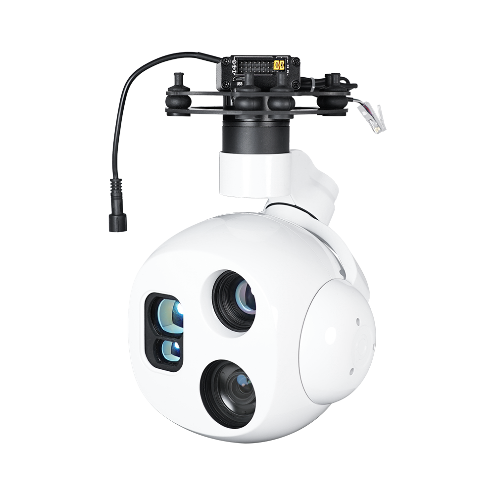
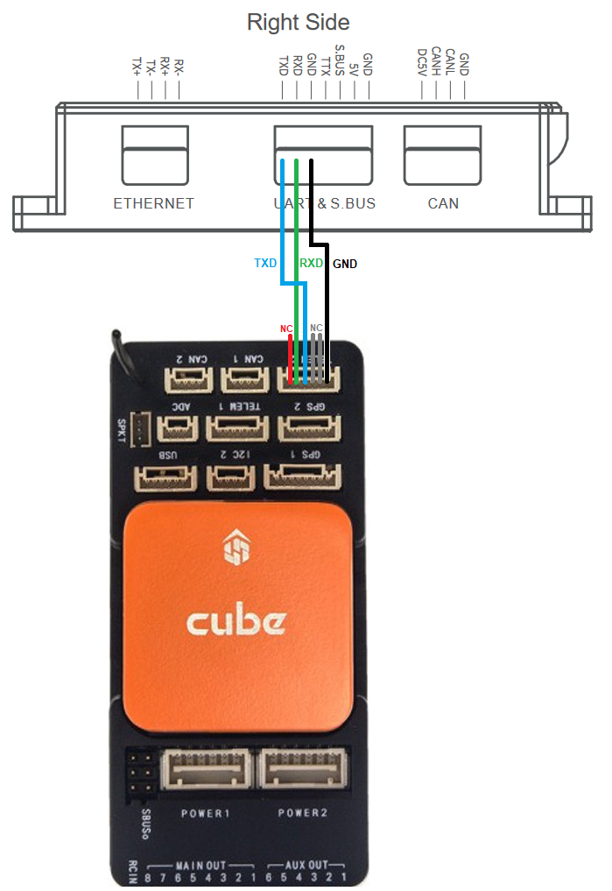
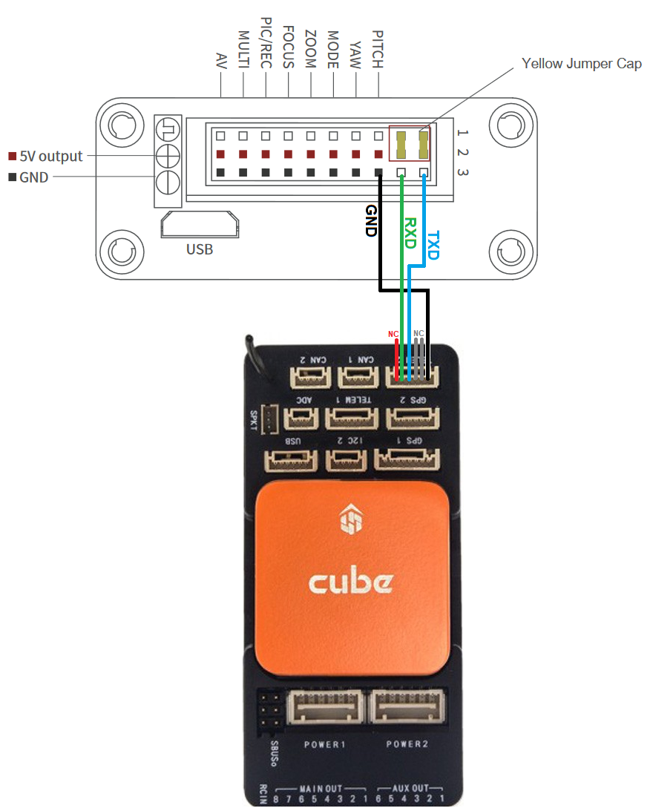

[copywiki destination=”copter,plane,rover”]
ViewPro Gimbals¶
{kind=link}
ArduPilot 4.4 (and higher) support the ViewPro gimbals using a Lua script that understands ViewPro’s custom serial protocol.
Connection and Configuration¶
Connect one of the autopilot’s serial ports to the gimbal as shown below. The first image if for users with a “viewport” connection.
 {kind=link}
{kind=link}
Connect to the autopilot with a ground station and do the following
Set SERIAL2_PROTOCOL = 28 (Scripting). This assumes the gimbal is attached to the autopilot’s Serial2 port but any serial port can be used.
Set SCR_ENABLE = 1 to enable scripting and reboot the autopilot
Set MNT1_TYPE = 9 (Scripting) to enable the mount/gimbal scripting driver
Set CAM1_TYPE = 4 (Mount) to enable the camera1 instance control using the mount driver
Download mount-viewpro-driver.lua and copy it to the autopilot’s SD card in the APM/scripts directory and reboot the autopilot
Optionally for gimbals with multiple cameras, an auxiliary switch can control the active camera by doing the following
Set RC9_OPTION = 300 (Scripting1) to allow selecting the acdtive camera with RC9. Note that any auxiliary switch may be used.
When the driver script is run, it creates three new parameters : VIEP_CAM_SWLOW, VIEP_CAM_SWMID, and VIEP_CAM_SWHIGH. These control the active camera when the aux switch is the low, medium and high position respectively. Possible values are
0: No change in camera selection
1: EO1
2: IR thermal
3: EO1 + IR Picture-in-picture
4: IR + EO1 Picture-in-picture
5: Fusion
6: IR1 13mm
7: IR2 52mm
Set VIEP_ZOOM_SPEED parameter created by the driver script to control the speed of zoom (value between 0 and 7)
Testing¶
See Gimbal / Mount Controls for details on how to control the gimbal